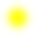

- Index
-
 ImageMagick Examples Preface and Index
ImageMagick Examples Preface and Index
-
Known and Fixed Bugs Index
-
 Blur with Transparency OR Transparency has
a Color!
Blur with Transparency OR Transparency has
a Color!
-
Blurs with a Non-Black Color
This is a demostration the blur with transparency bug.
This was extracted from the main examples page, when it was
realised that this was really a bug, and not just a quirk with
the blur function. As such these pages are written as if the
problem being discussed was not a bug. This major bug has now
been fixed for IM version 6.2.5. Blurs with transparency now do
things properly when the alpha channel is also blurred with the
other channels. For examples of using the fixed version of blur
see,
Blurring
Images. This page is for reference for older IM users who
may still have to deal with this bug. The examples on this page
have not been re-created when/if the bug was fixed.
First of all remember...
Blur and other greyscale operators are limited by the
channel setting.
Use "-channel" to add the alpha channel if
needed.
As such in these examples pay particular attension to the
"
-channel"
setting of the IM commands.
Transparency has a Color
As "
-blur"
and "
-gaussian"
are greyscale operators, they really have no idea what color or
transparency actually means. All they do is take the image they
are working with and treat each channel of the image as a
separate grey scale image. Now this works great on grey scale
images, and surprisingly it works equally well with RGB colored
images when you apply the same algorithm to all three collor
channels (the default). But if you try to combine blurring of
color with an alpha channel you run into serious problems.
Basically a RGBA color needs to be handled in a very special
way. But greyscale operators do not understand how color and
transparency relates to each other. What is worse, in a RGBA
image, transparency has a color! Because of this lack of
understanding blurring images with colors other than black (and
sometimes even with just black) produces serious side effects.
For example, what if instead of a black circle on a transparent
background we used a yellow circle instead...
convert -size 70x70 xc:none \
-fill yellow -draw 'circle 35,35 20,25' blur_yellow.png
convert blur_yellow.png -channel RGBA -blur 0x8 blur_yellow_2.png
|
|
|
Where did all that dark color come from? Well as the
blur operators have no idea of transparency, it blurred our
yellow circle, NOT into transparency, but into but a
fully-transparent black! It basically did not realise that a
transparent area should not produce any sort of color, so it
just blindly merged the invisible black background with our
yellow circle. The result is a yellow center, fading into a
semi-transparent black, then on into full-transparency. In
summary...
Transparency has a Color, even if you can't see it.
and
Blur and other greyscale operators do not understand
transparency.
This was not a problem with a black circle, as your were
blurring an opaque black drawn on a transparent black (the IM
color of '
none'). As such no color blurring
occurred, and only the alpha or transparency channel was
modified. But with colors and transparency, as you see we do
have problems. We can demonstrate that this is what is
happening by using an unusual fully-transparent red canvas,
rather than the more typical '
none'.
convert -size 70x70 xc:'#F00F' \
-fill yellow -draw 'circle 35,35 20,25' blur_on_red.png
convert blur_on_red.png -channel RGBA -blur 0x8 blur_on_red_2.png
|
|
|
As you can see, this time we get dark reddish colors,
even though the starting image looks exactly the same as it did
in the previous case.
We can highlight this problem even more limiting the blur
to just the alpha channel of the image. In this case the
colors are left completely alone and only the
transparency of the image is blurred.
convert blur_on_red.png -channel A -blur 0x8 blur_on_red_3.png
|
|
|
Horrible looking isn't it! But what is that black area?
Isn't this a yellow circle on a transparent red. Well no
actually it isn't! At that is the point.
To see what colors we were actually blurring, lets just
turn off the alpha channel on our source image...
convert blur_on_red.png +matte blur_on_red_4.png
|
|
|
When IM drew the yellow circle on a fully-transparent
red background, it generated some fully-transparent black
around the circle. That is because the mathematics it used told
it that '
it does not matter, it's fully-transparent!'.
Well in most cases it really doesn't matter. But for blurs it
does matter, as
blurs do not understand transparency. As
such you need to be aware of just what the transparency colors
are present when using the blur operators. Most blurring is
with either fully opaque images, or just the alpha channel for
the creation of shadows. Keeping the two types of blurring
separate works well. As such...
Either blur colors, or blur transparency, do not blur
both.
Blurs with Non-Black Colors
So how can we generate
a blurred yellow circle (or any other shape), without all those
extra colors? First if you are blurring a black shape, just do
it. and you should have no problems as the black shape should
(most of the time) be on a fully-transparent black canvas. For
any other color, the best technique is to blur only the alpha
channel, then replace the colors of the image using some fancy
alpha compositing. (See
Compose ATop Method for
details.
convert -size 70x70 xc:none -draw 'circle 35,35 20,25' \
-channel A -blur 0x8 blur_black.png
composite -compose Atop -size 70x70 xc:yellow blur_black.png \
blur_color.png
|
|
 |
You can do this in a single command, with the help of
some IM v6 constructs. The one real difference here is we
limited the blur to just the the alpha channel of the image.
Yes that image will look horrible but it will not be seen in
the output as we immediately replace the colors in the image,
use some color canvas generation methods.
convert -size 70x70 xc:none -draw 'circle 35,35 20,25' \
-channel A -blur 0x8 \
\( +clone -fill green -draw 'color 0,0 reset' \) \
-compose ATop -composite blur_green.png
|
|
|
Using "
-compose ATop"
does not just limit you to a simple color. You can use any
fully-opaque colored image as a source. For example a simple
white to grey gradient, can produce a interesting looking
'cloud' like object.
convert -size 70x70 xc:none -draw 'circle 35,35 15,25' \
-channel A -blur 0x4 -size 70x70 gradient:white-grey40 \
-compose ATop -composite blur_gradient.png
|
|
|
While on the subject of re-adding colors, some of the
simplier colors can be also be added by using one or two
"
-fx"
operators. Here is a blur that is re-colored as
'
navy' or half-bright blue. Only the blue channel
is replaced, as the red and green channels are already 0 in
value as the source image is black.
convert -size 70x70 xc:none -draw 'circle 35,35 20,25' \
-channel A -blur 0x8 -channel B -fx .5 blur_navy.png
|
|
|
In actual fact you can color the whole image in this
way
before you blur. If all the RGB channels already
have the right color, bluring the alpha channel will then
produce the desired result. Here for example we set all the
colors to white, wether they were transparent or not. Then we
blur just the alpha channel.
convert -size 70x70 xc:none -draw 'circle 35,35 20,25' \
-fx 1 -channel A -blur 0x8 blur_white.png
|
|
![[IM Output]](blur_white.png)
|
Note you can not use a normal color replacement for
this, as was done for
Canvases with a
Specific Color as this image operator does understand
transparency, so a transparent white is different to a opaque
white. Alturnativally as all the RGB colors were black,
"
-negate"
them to white.
convert -size 70x70 xc:none -draw 'circle 35,35 20,25' \
-negate -channel A -blur 0x8 blur_negate.png
|
|
|
Negate is another operator that does not understand
transparency, and obeys the "
-channel"
setting. It just does not have quite the same problem that blur
has with transparent colors.
In summary, blur operations, like many IM image operators, do
not understand the difference between a color and an alpha
channel. Blurring fully-opaque colors work prefectally fine.
Blurring just the alpha channel or image mask also works fine.
As long as you ensure the colors that will become
semi-transparent are also set correctly, before or more
easilly, after, the blur operation, you should have no
problems. Basically, be cautious, and think before you blur.
{kind=link}
{kind=link}
{kind=link}
{kind=link}
{kind=link}
{kind=link}
{kind=link}
{kind=link}
{kind=link}
{kind=link}
{kind=link}
{kind=link}